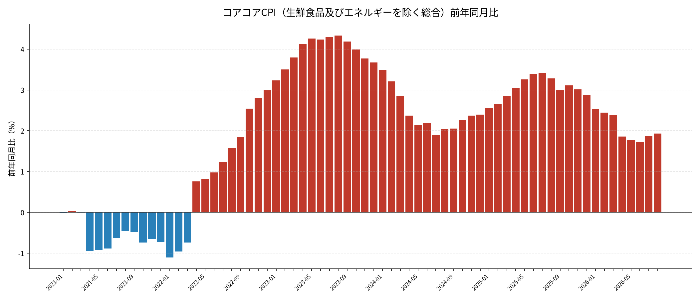
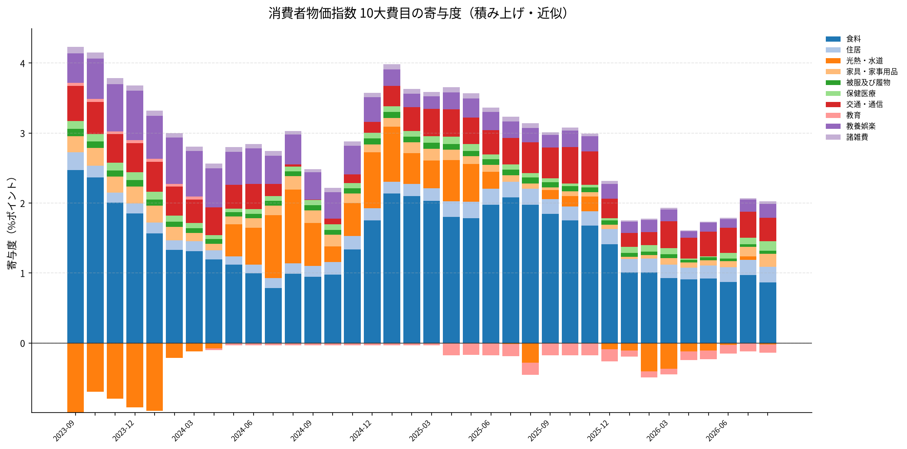
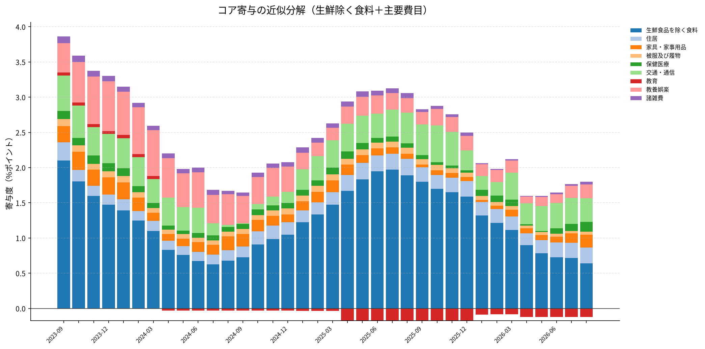

コアコアCPI 前年同月比
生鮮食品及びエネルギーを除く総合の前年同月比（バー）。

10大費目の寄与度（積み上げ）
総合に対する10大費目の寄与度近似（ウエイト×各費目前年同月比）。

コア寄与の近似（積み上げ）
生鮮食品を除く食料とエネルギー色の薄い費目を中心にしたコア寄与の近似分解。

総務省統計局の消費者物価指数から、コアコア（生鮮食品及びエネルギーを除く総合）の前年同月比と主要な寄与度分解を可視化しています。
生鮮食品及びエネルギーを除く総合の前年同月比（バー）。

総合に対する10大費目の寄与度近似（ウエイト×各費目前年同月比）。

生鮮食品を除く食料とエネルギー色の薄い費目を中心にしたコア寄与の近似分解。
